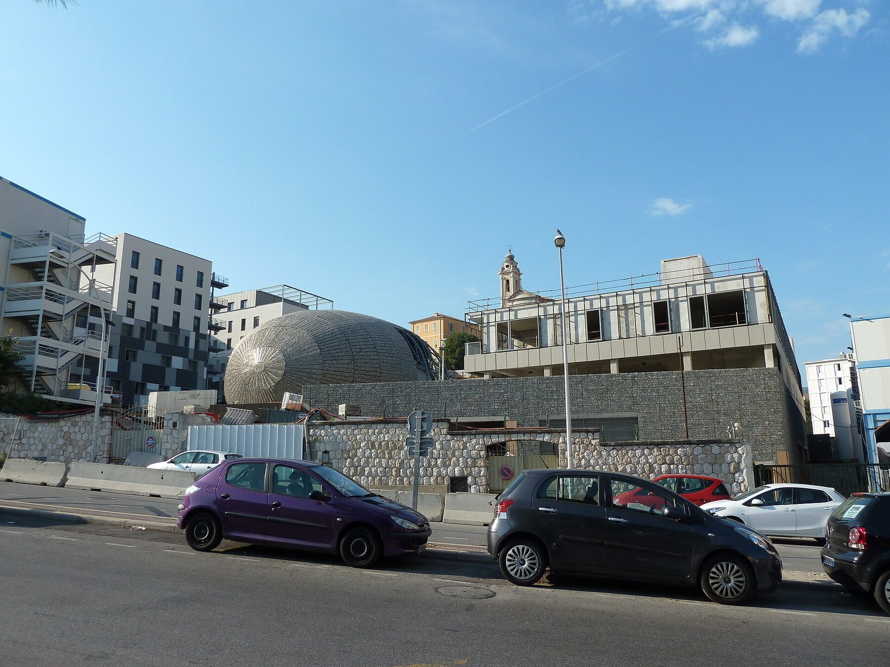

Votre affectation tombe à Nice. Vous avez quelques semaines pour trouver un logement pour un semestre, parfois deux.
Ce guide s'adresse aux internes, aux docteurs juniors, aux fellows et aux médecins en formation. Il explique comment se loger près du CHU Pasteur 2 et du Centre Antoine Lacassagne, avec un contrat adapté à la durée d'un stage.
01Quand commencent les semestres d'internat à Nice ?
Nice dépend de l'ARS Provence-Alpes-Côte d'Azur. Selon l'ARS, le stage d'hiver court de novembre à avril, et le stage d'été de mai à octobre. Le semestre d'hiver 2026-2027 commence en novembre 2026, et le changement de semestre suivant est fixé au 3 mai 2027.
Un semestre dure 6 mois, une durée comprise dans les 1 à 10 mois du bail mobilité.
Prochain changement de semestre : 3 mai 2027 (ARS Provence-Alpes-Côte d'Azur).

02Où se trouvent le CHU Pasteur 2 et le Centre Antoine Lacassagne ?
L'hôpital Pasteur 2 du CHU de Nice est au 30 voie Romaine, à Nice. Le tram ligne 1 le dessert, arrêt Hôpital Pasteur.
Le Centre Antoine Lacassagne est un centre de lutte contre le cancer. Il est au 33 avenue de Valombrose, à Nice.
03À combien de minutes se trouve le logement ?
L'appartement des Piafs des Collines est sur la colline de Bellet, à l'ouest de Nice. En voiture, hors trafic :
- CHU Pasteur 2 : 15 min ;
- Centre Antoine Lacassagne : 16 min ;
- Clinique Kantys Centre : 12 min ;
- campus Valrose : 13 min ;
- aéroport : 20 min ;
- Monaco : 22 min.
Une place de parking privée dans l'enceinte est comprise. Vous rentrez de garde et vous vous garez chez vous.
Le bus 60 s'arrête à 50 m. Il rejoint le tram ligne 2 à Magnan.
- La plage7 min
- Clinique Kantys Centre12 min
- Campus Valrose13 min
- CHU Pasteur 215 min
- Centre Antoine Lacassagne16 min
- Aéroport20 min
- Monaco22 min
- Sophia Antipolis28 min
Minutes hors trafic. Bus 60 vers le tram ligne 2 à Magnan.
04Quel contrat pour un interne ou un fellow ?
Le bail mobilité est fait pour vous, dès lors que vous justifiez d'un des motifs prévus par la loi. Il est prévu par les articles 25-12 et suivants de la loi n° 89-462 du 6 juillet 1989, issus de la loi ELAN du 23 novembre 2018.
- Durée de 1 à 10 mois, fixée à la signature.
- Ni renouvelable ni reconductible.
- Aucun dépôt de garantie.
- Ouvert aux personnes en formation professionnelle, en études supérieures, en stage ou en mission temporaire, entre autres motifs.
Votre justificatif d'affectation ou votre attestation de formation sert de justificatif du motif. Il est demandé avant la signature.
Un semestre de 6 mois tient dans un bail. Deux semestres consécutifs, de novembre à octobre, font 12 mois. Le bail mobilité couvre au plus 10 mois : au-delà, un nouveau bail sur le même logement relève du bail meublé classique.
05Et si l'hôpital ou le laboratoire paie ?
Pour un fellowship financé, l'établissement, la fondation ou le laboratoire peut louer à son nom.
Le bail se fait alors au nom de la structure, à partir de 3 mois. La facture est établie à son nom. Aucun justificatif de motif n'est demandé.
06Quelle garantie fournir ?
Visale n'est pas mobilisable à ce niveau de loyer. La garantie prend la forme d'une caution de l'employeur ou d'une caution personnelle.
07Combien coûte un logement pour un semestre ?
Le prix, par mois, charges comprises :
- 1 à 2 mois3 600 €
- 3 à 6 mois3 200 €
- 7 à 10 mois2 880 €
− 720 € par mois sur 7 à 10 mois, par rapport à 1 à 2 mois.
Pour un semestre de 6 mois, le mois est à 3 200 €.
Le prix comprend les charges, l'énergie, la fibre, le parking privé, le linge de lit et de toilette fourni à l'arrivée et le ménage de sortie. Aucune facture d'énergie ne vous parvient. Cette location meublée d'habitation, sans prestation para-hôtelière, est exonérée de TVA (article 261 D, 4° du code général des impôts) : le montant affiché est le montant payé, sans TVA ajoutée ni récupérable. L'assurance habitation reste à la charge du locataire.
08À quoi ressemble l'appartement ?
77,51 m² au 1er étage d'une villa. Deux chambres, de 13,91 et 12,88 m². Deux salles d'eau, dont une privative avec douche à l'italienne, et un WC indépendant.
La seconde chambre sert de bureau pour préparer vos gardes, vos staffs ou votre mémoire. Elle accueille aussi un conjoint ou un proche de passage.
Deux terrasses de 10,58 et 15,75 m² donnent sur la Baie des Anges. Une véranda buanderie de 4,95 m² accueille lave-linge et sèche-linge.
Le chauffage et la climatisation passent par une pompe à chaleur réversible. Le DPE est en classe C pour l'énergie et A pour le climat. La fibre est installée.
Une piscine partagée est accessible selon horaires.
09Comment se passe l'arrivée après un trajet ou une garde ?
L'arrivée est autonome : le code d'accès vous est communiqué avant la date d'entrée. L'état des lieux d'entrée et l'inventaire du mobilier sont établis contradictoirement avec vous à l'entrée dans les lieux. Vous fixez avec le bailleur l'heure de ce rendez-vous, le jour de votre prise de poste ou la veille.
Le linge de lit et de toilette est fourni à l'arrivée. La cuisine est équipée d'un îlot à induction, d'un four, d'un micro-ondes, d'un lave-vaisselle et d'un réfrigérateur-congélateur.
10Quand faut-il réserver ?
Dès que votre affectation est connue. Un seul appartement est proposé : une fois loué, il l'est pour toute la durée du bail.
Indiquez votre date de prise de fonctions, la durée de votre stage et qui paie le loyer. Joignez votre justificatif d'affectation ou de formation.
Demander une disponibilité pour votre internat ou votre fellowship à Nice, en bail mobilité de 1 à 10 mois.